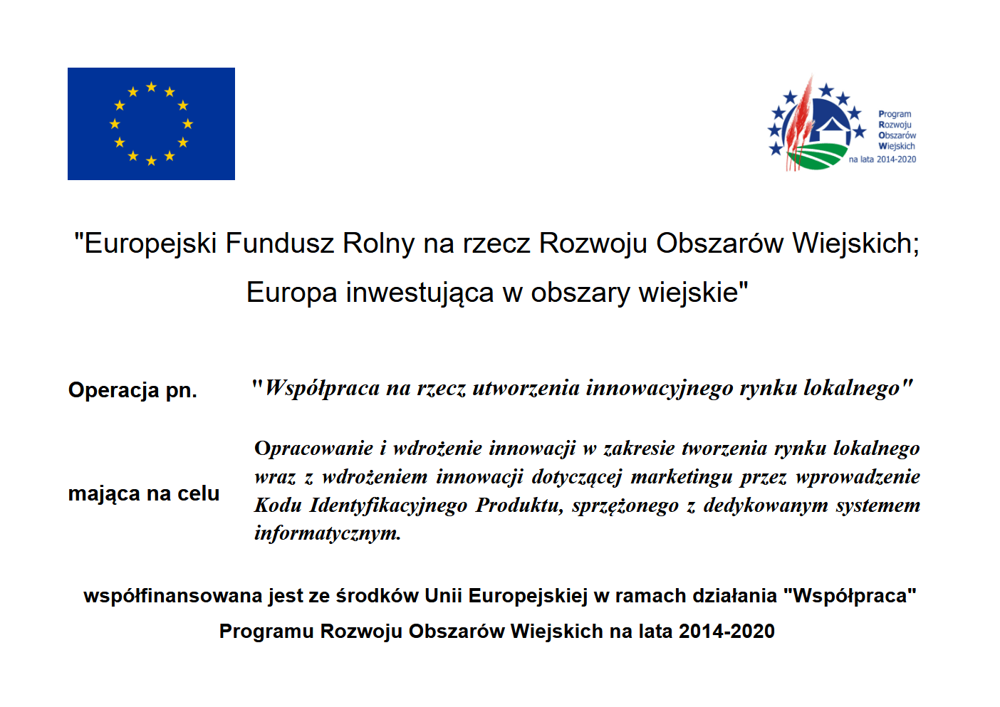
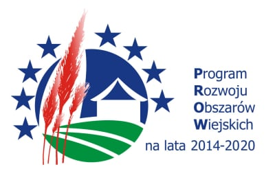
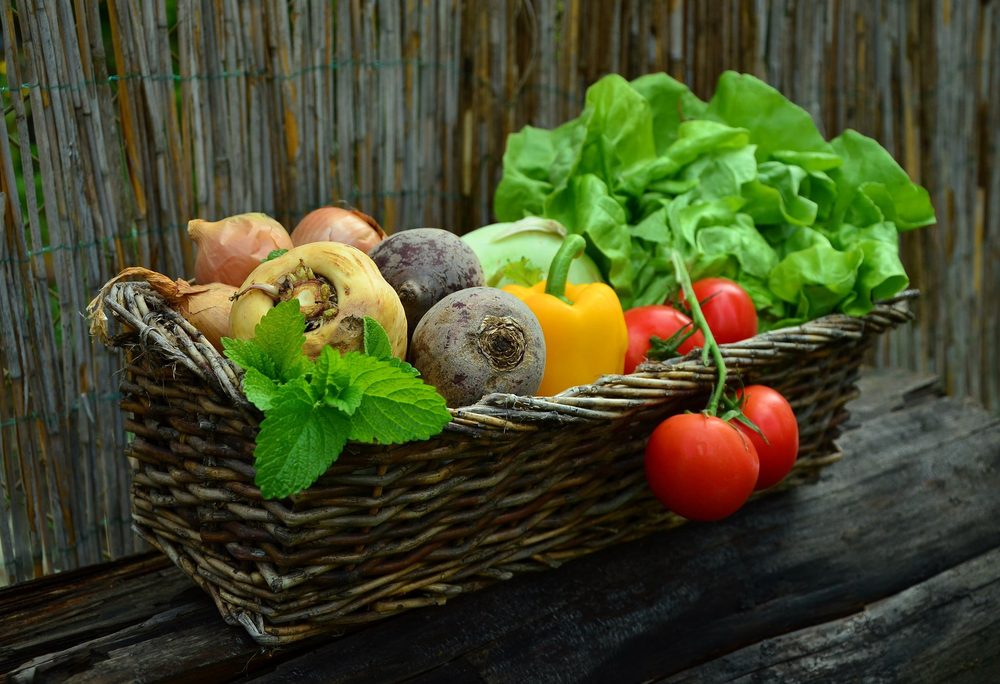
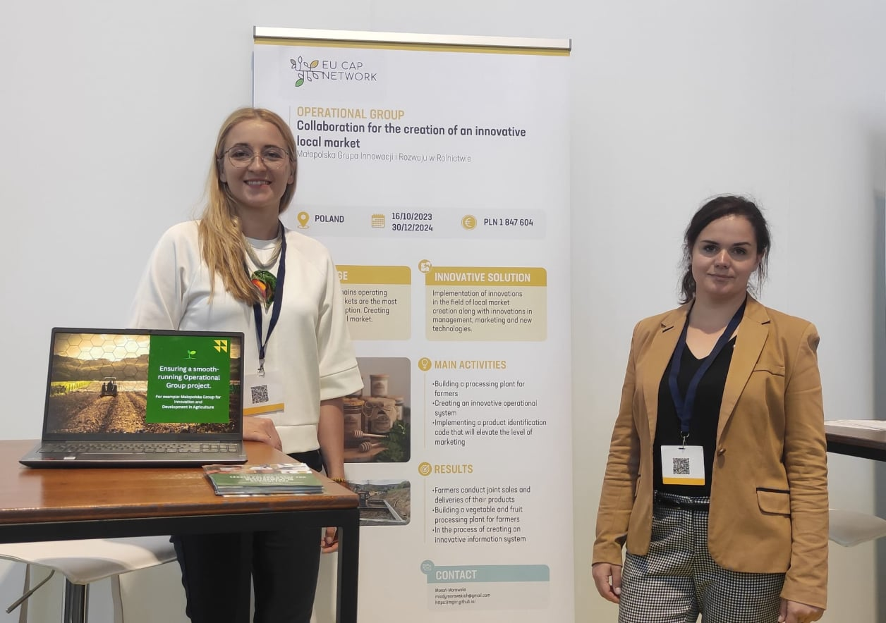
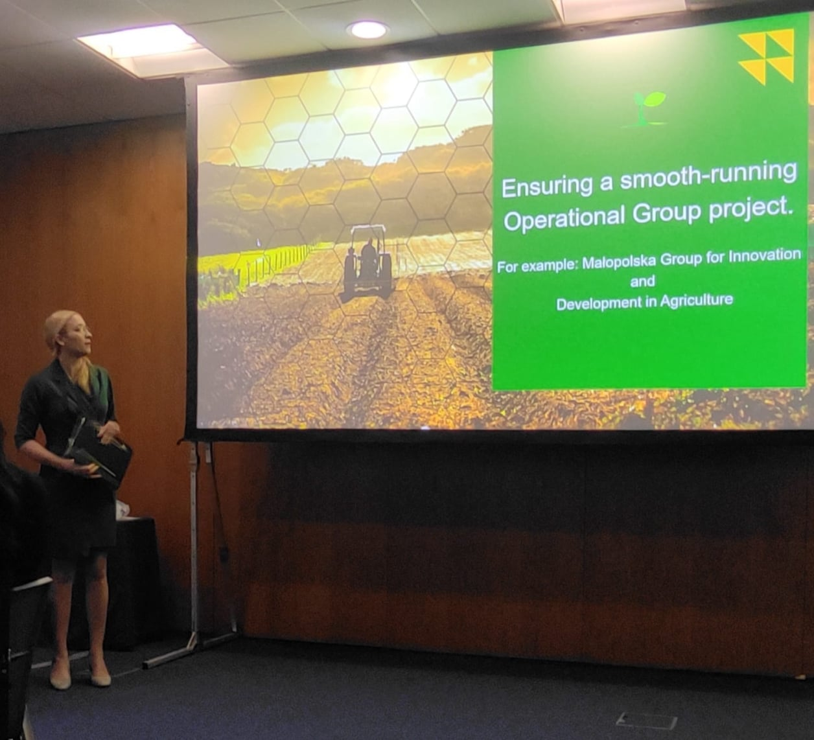
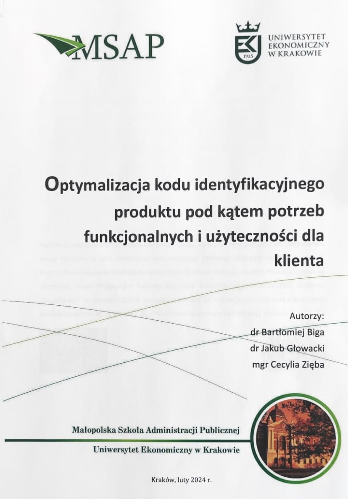
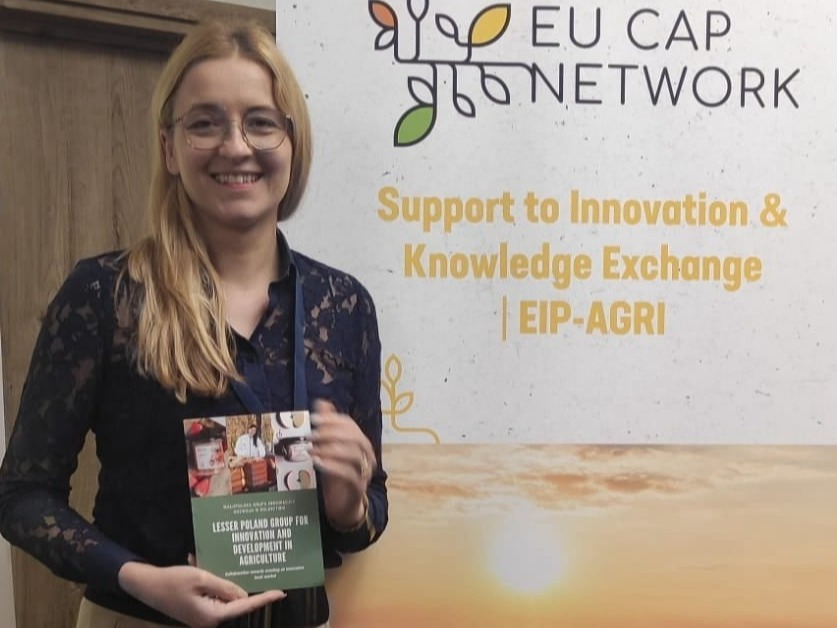
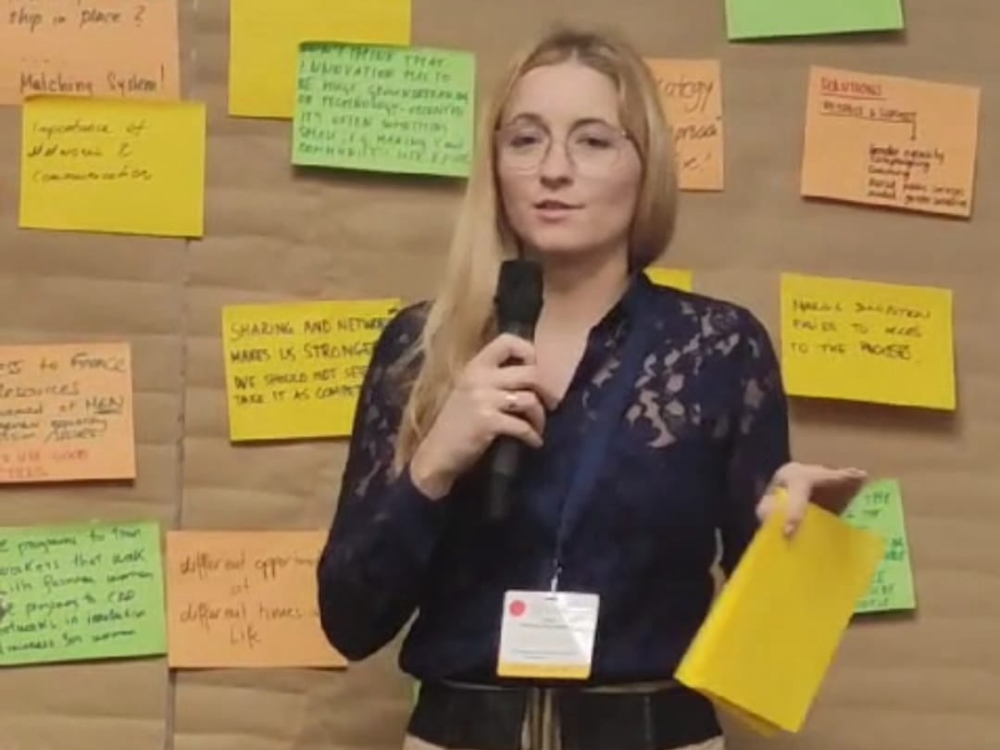
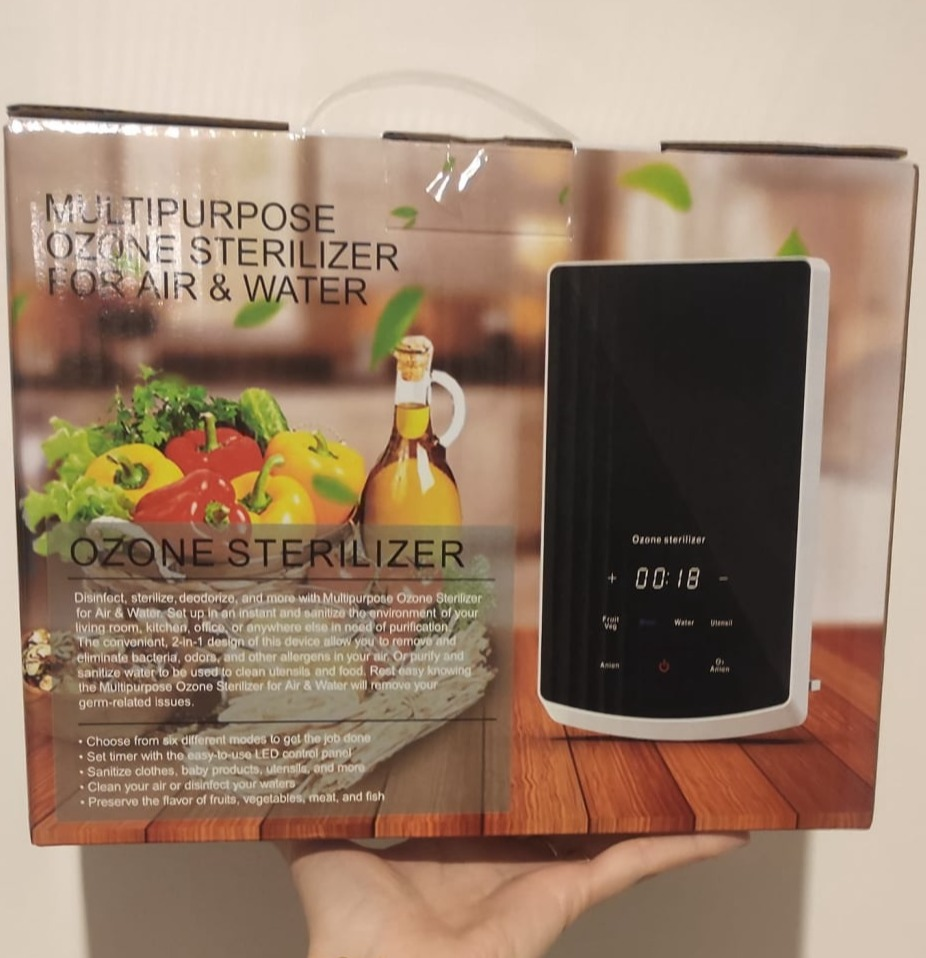

Free AI Website Maker

Działanie 16 "Współpraca" objęte Programem Rozwoju Obszarów Wiejskich na lata 2014–2020
Tytuł operacji: Współpraca na rzecz utworzenia innowacyjnego rynku lokalnego

Numer umowy o przyznaniu pomocy: 00098.DDD.6509.00009.2022.06
Tytuł operacji: Współpraca na rzecz utworzenia innowacyjnego rynku lokalnego
Lider: Mateusz Morawski, ul. Dębowa 73, 32-095 Narama
Skład grupy operacyjnej:
- 11 rolników
- 1 właściciel lasu
- 1 przedsiębiorca MŚP
- 1 podmiot doradczy
- 1 jednostka naukowa
Słowa kluczowe umożliwiające identyfikację przedmiotu operacji: łańcuch dostaw, marketing i konsumpcja
Okres realizacji operacji: 16.10.2023-30.12.2024
Źródła finansowania operacji: środki EFRROW 63,63% przyznanej pomocy; krajowe środki publiczne 36,37% przyznanej pomocy
Całkowity budżet operacji: 2396215,39 PLN
Główna lokalizacja realizacji operacji (NUTS3): Nowosądecki
Dodatkowa lokalizacja realizacji operacji (NUTS3): Krakowski
Krótkie podsumowanie operacji, zawierające opis celów i głównych zadań do zrealizowania oraz wskazanie oczekiwanych rezultatów:
[PL]
Do końca 2024 r. przewidziane jest opracowanie innowacji tworzenia lokalnego rynku, obejmującego budowę jednego budynku produkcyjnego oraz zakup środka transportu. Planowane jest wdrożenie marketingowego Kodu Identyfikacyjnego Produktu współdziałającego z nowym systemem informatycznym oraz stworzenie dedykowanego systemu i aplikacji dla "Małopolskiej Grupy Innowacji i Rozwoju w Rolnictwie". Dodatkowo, rozwijany jest innowacyjny produkt "kiszone liście chrzanu".
[EN]
By the end of 2024, the development of a local market innovation, which includes the construction of one production building, and the purchase of transportation, is planned. The implementation of a marketing Product Identification Code, integrated with a new IT system, and the creation of a dedicated system and app for the "Małopolska Group of Innovation and Development in Agriculture" are foreseen. Additionally, an innovative product "fermented horseradish leaves" is being developed.
Opis działań podejmowanych w ramach operacji:
[PL]
Planowana operacja zakłada utworzenie rynku lokalnego produktów żywnościowych z udziałem rolników i przedsiębiorców. Powstanie budynek produkcyjno-usługowy umożliwiający wytwarzanie i sprzedaż innowacyjnych produktów. Wprowadzony zostanie zaawansowany system informatyczny dla zarządzania, analizy i komunikacji.
[EN]
The planned operation involves establishing a local food market with the participation of farmers and entrepreneurs. A production-service building will be created, enabling the manufacturing and sale of innovative products. An advanced IT system for management, analysis, and communication will be introduced.
Opis kontekstu operacji:
[PL]
Globalny problem niedoborów żywności podkreśla strategiczne znaczenie zabezpieczenia dostaw żywności. Jednym ze sposobów zwiększenia bezpieczeństwa dostaw jest tworzenie rynków lokalnych, które umożliwiają bezpośredni kontakt klienta z producentem żywności. W gminie Sękowa, mimo rosnącego zapotrzebowania, brakuje takiego rynku lokalnego. Planowana operacja ma na celu wypełnienie tej luki, skupiając się na obszarze gminy Sękowa i sąsiednich gmin w województwie małopolskim. Grupą docelową są mieszkańcy tych gmin oraz turyści odwiedzający region.
[EN]
The global issue of food shortages emphasizes the strategic importance of securing food supplies. One way to enhance food supply security is by establishing local markets, allowing direct contact between consumers and food producers. In the Sękowa commune, despite growing demand, such a local market is absent. The planned operation aims to fill this gap, focusing on the Sękowa commune and neighboring communes in the Małopolska region. The target group consists of residents of these communes and tourists visiting the region
Dodatkowe uwagi:
[PL]
Wprowadzenie rynku lokalnego w gminie Sękowa odpowiada na globalne wyzwania związane z bezpieczeństwem dostaw żywności. Przeszkodą może być brak infrastruktury do sprzedaży spełniającej wymogi sanitarne. Grupa EPI nie posiada odpowiednich budynków, co wymaga budowy nowych, aby spełnić normy prawne. Innowacje, jak Kod Identyfikacyjny Produktu i aplikacja mobilna, usprawnią działanie rynku i dostęp dla klientów. Jednakże, ich skuteczność zależy od akceptacji i adaptacji przez konsumentów. Innowacyjny produkt, "kiszone liście chrzanu", może wymagać działań promocyjnych, aby zwiększyć jego popularność. Istotne jest uwzględnienie feedbacku od klientów w dalszych etapach.
[EN]
Introducing a local market in Sękowa addresses global challenges related to food supply security. A potential obstacle is the lack of infrastructure for compliant sales. The EPI group lacks suitable buildings, necessitating new constructions to meet legal standards. Innovations like the Product Identification Code and mobile app will streamline the market's operation and accessibility. However, their effectiveness depends on consumer acceptance and adaptation. The innovative product, "fermented horseradish leaves", might require promotional efforts to boost its popularity. Incorporating feedback from customers in subsequent phases is crucial.
Główne korzyści, jakie będą wynikać z zastosowania poszczególnych lub wszystkich przewidywanych rezultatów operacji dla ich adresata:
[PL]
Tworzenie lokalnego rynku żywnościowego zwiększy dostęp do świeżych i lokalnych produktów. Nowa infrastruktura umożliwi sprawną sprzedaż i produkcję. Wprowadzenie nowych, innowacyjnych produktów zaspokoi potrzeby klientów szukających nowości. Zaawansowany system informatyczny usprawni zarządzanie produkcją, sprzedażą i relacjami z klientem. Możliwość składania zamówień w różny sposób dostosuje się do potrzeb klienta. Systematyczne zbieranie danych i analiza pozwoli na stałe doskonalenie oferty i jakości produktów. Integracja z popularnymi platformami sprzedaży zwiększy widoczność oferty dla szerokiego grona odbiorców.
[EN]
Creating a local food market will increase access to fresh and local products. New infrastructure will facilitate efficient sales and production. Introducing new, innovative products will satisfy the needs of customers looking for novelties. An advanced IT system will streamline production management, sales, and customer relations. The ability to place orders in various ways will adapt to the customer's needs. Systematic data collection and analysis will allow for continuous improvement of the offer and product quality. Integration with popular sales platforms will increase the visibility of the offer to a wide audience.
Streszczenie praktyki na temat końcowych lub oczekiwanych wyników:
[PL]
W ramach planowanej inicjatywy, tworzy się rynek lokalny produktów żywnościowych, który integruje przedsiębiorców, właściciela lasu oraz 11 rolników. Te osoby będą oferować 24 produkty, sprzedawane głównie w stacjonarnych budynkach usługowych oraz przez dostawy bezpośrednio do klienta. Konsorcjum w pierwszym roku zamierza zaopatrywać 500 odbiorców. Grupa wprowadzi innowacyjny produkt - kiszone liście chrzanu. Kluczowym narzędziem dla tego przedsięwzięcia będzie nowoczesny system informatyczny. System ten ułatwi zarządzanie od produkcji po sprzedaż, oferując m.in. monitorowanie stanów magazynowych, zarządzanie logistyką czy analizę jakości produktów. System pozwoli także na lepsze zarządzanie relacjami z klientami oraz efektywną komunikację wewnątrz grupy.
[EN]
Within the planned initiative, a local food market is being created, integrating entrepreneurs, a forest owner, and 11 farmers. These stakeholders will offer 24 products, sold mainly in stationary service buildings and through direct deliveries to the customer. The consortium intends to supply 500 recipients in the first year. The group will introduce an innovative product - fermented horseradish leaves. A key tool for this venture will be a modern IT system. This system will facilitate management from production to sale, offering, among others, monitoring of stock levels, logistics management, or product quality analysis. The system will also allow better customer relationship management and effective internal group communication.
Z ogromną radością informujemy, że nasza Grupa Operacyjna wzbogaciła się o nowy pojazd dostawczy. To ważny krok w rozwoju naszej infrastruktury logistycznej, który pozwoli na jeszcze sprawniejsze dostarczanie produktów od rolników z naszej grupy bezpośrednio do klientów.
Dzięki nowemu samochodowi, możemy zagwarantować szybką i bezpieczną dostawę świeżych produktów rolnych, co przekłada się na lepszą jakość i zadowolenie naszych odbiorców. Ten nowy nabytek to nie tylko znacząca poprawa w naszych operacjach logistycznych, ale również dowód na to, że ciągle inwestujemy w rozwój i efektywność naszej działalności.
Z niecierpliwością oczekujemy na możliwość zaprezentowania pełni możliwości naszego nowego pojazdu i jesteśmy przekonani, że jego wprowadzenie znacząco wzmocni zarówno naszą współpracę z rolnikami, jak i satysfakcję naszych klientów.


Miło nam poinformować, że nasze członkinie, Lidia Moroń-Morawska oraz Katarzyna Jarek-Moroń, reprezentujące Małopolską Grupę Innowacji i Rozwoju w Rolnictwie, miały zaszczyt uczestniczyć w konferencji EIP-AGRI Operational Groups: Innovation in practice, która odbyła się w Estoril, Portugalia.
Wydarzenie zgromadziło ponad 500 specjalistów z całej Europy, co świadczy o jego międzynarodowym znaczeniu i skali. Podczas konferencji wybrano około 85 Grup Operacyjnych, które miały okazję zaprezentować swoje Grupy podczas Wystawy Innowacji. Nasze przedstawicielki dzieliły się wiedzą i doświadczeniami wynikającymi z realizacji naszego projektu, co pozwoliło na wymianę cennych informacji i wyników z innymi uczestnikami.
Największym osiągnięciem jest jednak fakt, że pani Lidia Moroń-Morawska została wybrana do prowadzenia prezentacji na temat "Sprawne funkcjonowanie grup operacyjnych na podstawie Małopolskiej Grupy Innowacji i Rozwoju w Rolnictwie" przed licznym audytorium z całej Europy. To wielkie wyróżnienie i dowód uznania dla jej pracy oraz wkładu w rozwój sektora rolniczego.
Jesteśmy dumni z naszych przedstawicielek i cieszymy się, że nasze działania są doceniane na arenie międzynarodowej. Dziękujemy za wsparcie wszystkim, którzy przyczyniają się do rozwoju naszej grupy i innowacji w rolnictwie.
Z radością informujemy o postępie prac nad nowym budynkiem produkcyjno-magazynowym, który stanowi kolejny krok w rozwoju naszej grupy operacyjnej. Ten nowy obiekt ma kluczowe znaczenie dla naszych działań i umożliwi skuteczniejsze wsparcie lokalnych inicjatyw rolniczych oraz innowacji w naszym regionie.
Aktualnie budowa znajduje się na zaawansowanym etapie. Ukończony został stan zero, co oznacza, że fundamenty i konstrukcje nośne są już gotowe. Ponadto, mury parteru zostały wzniesione, a strop nad parterem jest już na miejscu, co stanowi solidną bazę dla dalszych prac.
Budowa tego obiektu jest nie tylko świadectwem naszego zaangażowania w rozwój nowoczesnego rolnictwa, ale również potwierdza naszą misję wspierania i promowania innowacji w sektorze. Obiekt produkcyjno-magazynowy umożliwi nam lepszą logistykę oraz efektywniejsze zarządzanie zasobami, co jest niezbędne w kontekście rosnących wymagań rynkowych i oczekiwań naszych klientów.
Z niecierpliwością oczekujemy dalszych etapów realizacji tego projektu i będziemy na bieżąco informować o kolejnych kamieniach milowych. Dziękujemy wszystkim zaangażowanym za ich ciężką pracę i dedykację, która przyczynia się do realizacji tej ważnej inwestycji. Nasze działania potwierdzają, że Małopolska Grupa Innowacji i Rozwoju w Rolnictwie jest silnym i dynamicznie rozwijającym się podmiotem na mapie polskiego rolnictwa.

Z dumą informujemy, że w ramach naszej ciągłej współpracy z wiodącymi instytucjami akademickimi Uniwersytet Ekonomiczny w Krakowie opracował dla naszej Grupy Operacyjnej znaczącą publikację pt. "Optymalizacja kodu identyfikacyjnego produktu pod kątem potrzeb funkcjonalnych i użyteczności dla klienta".
To wyjątkowe opracowanie jest rezultatem badań przeprowadzonych w ramach naszego projektu "Współpraca grup rolników w celu stworzenia innowacyjnego łańcucha dostaw żywności". Celem publikacji jest poprawa funkcjonalności i użyteczności kodów identyfikacyjnych produktów, co jest kluczowe dla zapewnienia efektywności i transparentności w nowoczesnym łańcuchu dostaw żywności. Jest to też doskonały wstęp do paszportyzacji żywności produkowanej przez rolników z naszej Grupy Operacyjnej.
Dzięki tej współpracy, możemy lepiej zrozumieć i zaimplementować najlepsze praktyki w zakresie identyfikacji produktów, co bezpośrednio przekłada się na zwiększenie satysfakcji naszych klientów i ułatwienie procesów zakupowych. Publikacja ta stanowi cenne źródło wiedzy nie tylko dla naszej Grupy Operacyjnej, ale również dla wszystkich zainteresowanych rolników i uczestników rynku żywnościowego, którzy dążą do innowacji i optymalizacji swojej działalności.
Zachęcamy wszystkich zainteresowanych do zapoznania się z wynikami tego istotnego opracowania, który jest dostępny w formie drukowanej w siedzibie Małopolskiej Grupy Innowacji i Rozwoju w Rolnictwie. Ta publikacja nie tylko podnosi standardy naszej pracy, ale także wpływa na rozwój całego sektora rolniczego w naszym regionie.
Wyniki badań
WPROWADZENIE
W dzisiejszym świecie, w którym konkurencja na rynku jest coraz bardziej zacięta, istnieje potrzeba skutecznej identyfikacji produktów, zwłaszcza w sektorze rolniczym, gdzie klienci coraz bardziej cenią sobie produkty lokalne oraz ich jakość. Korzystanie z dobrze zaprojektowanego kodu identyfikacyjnego produktu staje się zatem jednym z kluczowych elementów działań mających na celu stworzenie innowacyjnego rolnego produktu lokalnego. Diagnoza postawiona na początku realizacji projektu wskazywała, że żaden z członków grupy operacyjnej1 nie wykorzystywał do tej pory w swojej działalności, dedykowanego i spersonalizowanego systemu informatycznego połączonego z systemem kodu identyfikacyjnego, przeznaczonego do prowadzenia działań organizacyjnych i markengowych w ramach gospodarstwa rolnego i sprzedaży produktów rolnych. Zastosowanie w planowanym systemie informatycznym tego rozwiązania umożliwi wprowadzenie grupie operacyjnej innowacyjnych metod i narzędzi markengowych.
Niniejsze opracowanie powstało w ramach projektu pt. „Współpraca na rzecz utworzenia innowacyjnego rynku lokalnego”, działanie „WSPÓŁPRACA” objętego Programem Rozwoju Obszarów Wiejskich na lata 2014-2020, nr umowy 00098.DDD.6509.00009.2022.06, finansowanego ze środków Europejskiego Funduszu Rolnego na rzecz Rozwoju Obszarów Wiejskich oraz krajowych środków publicznych. Ekspertyza koncentruje się na analizie potrzeb funkcjonalnych i użyteczności dla klienta w kontekście optymalizacji kodu identyfikacyjnego produktu. Prześledzimy istotę tego zagadnienia oraz jego znaczenie w kontekście uwarunkowań organizacyjno-prawnych. Rozpoczniemy od zdefiniowania kluczowych pojęć, takich jak kod identyfikacyjny produktu oraz funkcjonalność i użyteczność dla klienta. Następnie przejdziemy do analizy istniejących rozwiązań stosowanych zagranicą oraz syntetycznej analizy rynku rolnego. W końcowej części opracowania zaprezentujemy technologiczne możliwości wdrożenia rozwiązań w zakresie kodu identyfikacji produktu oraz wnioski i rekomendacje zawierające propozycje praktycznych działań mających na celu usprawnienie procesu identyfikacji produktu, uwzględniając zarówno wymagania techniczne, jak i oczekiwania klientów.
1. ANALIZA RYNKU ROLNEGO W POLSCE
Rolnictwo, które jest odpowiedzialne za wiele aspektów funkcjonowania społeczeństwa, takich jak na przykład bezpieczeństwo żywnościowe czy kształtowanie krajobrazu, odgrywa kluczową rolę w życiu kraju. Zajmując blisko połowę jego powierzchni, wpływa nie tylko na środowisko naturalne terenów wiejskich, ale także na życie społeczne i ekonomiczne. W Polsce ponad 1,3 mln gospodarstw rolnych stanowi podstawę analizy ekonomicznej, społecznej i środowiskowej tego sektora. Procesy globalizacyjne, włączając integrację z Unią Europejską, uczyniły polskie rolnictwo integralną częścią światowego rynku. Wspólna Polityka Rolna odgrywa kluczową rolę w tym procesie, otwierając drzwi do europejskiego rynku, ale stawiając również wyzwania konkurencyjne. Dla wielu osób rolnictwo jest nie tylko źródłem utrzymania, lecz także sercem życia wiejskiego (Łączyński 2022).
Według danych z Powszechnego Spisu Rolnego (PSR 2020), w Polsce funkcjonuje ok. 1,3 mln gospodarstw rolnych. Spośród nich 99,4% to gospodarstwa indywidualne, które posiadały łącznie 91,3% gruntów rolnych oraz 90,8% dużych zwierząt hodowlanych znajdujących się w gospodarstwach rolnych (Szomburg i in. 2022). Ponadto 96,8% pełnozatrudnionych pracowało w gospodarstwach indywidualnych. Tendencja spadku liczby gospodarstw rolnych, przy jednoczesnym wzroście średniej powierzchni, utrzymywała się również w 2020 roku, co zauważano od wielu lat. W porównaniu do 2010 roku, liczba gospodarstw zmniejszyła się o około 192 tysiące, czyli o 12,7%. Spadek ten wynikał głównie z redukcji liczby gospodarstw w różnych grupach obszarowych użytków rolnych (UR) od 1 do 20 ha. Największy spadek odnotowano w grupach obszarowych 1-2 ha UR (o ponad 25%) oraz 5-10 ha UR (o ponad 16%). W grupie 2-3 ha użytków rolnych odnotowano najmniejszą redukcję gospodarstw (Ibidem).
Od 2000 roku obserwowano stopniowy wzrost udziału towarowej produkcji rolniczej w produkcji globalnej, który osiągnął od 2009 roku poziom ponad 70%. Jednak w 2022 roku zanotowano spadek udziału produkcji towarowej w produkcji globalnej, obniżając się do 71,5% (w porównaniu do 74,4% w 2021 roku). Spadek ten wynikał głównie z redukcji udziału produkcji roślinnej, obniżając się do 54,8% (w porównaniu do 58,9% w 2021 roku), oraz produkcji zwierzęcej, która zmniejszyła się do 90,3% (w porównaniu do 91,3% w roku poprzednim). Produkty rolne przeznaczone do sprzedaży znajdują odbiorców zarówno na rynku krajowym, jak i na dynamicznie rozwijających się rynkach zagranicznych. Jednakże w obliczu presji na podaż surowców na europejskich i światowych rynkach rolnych oraz związanych z tym trudności w zbyciu produktów rolnych od 2015 roku, podejmowane są działania mające na celu dywersyfikację kierunków eksportu towarów rolno-spożywczych (Główny Urząd Statystyczny).
Rysunek 1. Struktura towarowej produkcji rolniczej w 2022 r.
Źródło: Główny Urząd Statystyczny.
Rysunek 2. Struktura eksportu towarów rolno-spożywczy
Źródło: Główny Urząd Statystyczny.
W strukturze eksportu towarów rolno-spożywczych, po gotowych artykułach spożywczych (CN – Gotowe artykuły spożywcze) udział mięsa i podrobów jadalnych był nadal duży i stanowił 15,8%. Wśród produktów pochodzenia roślinnego najwyższy udział w wartości eksportu towarów rolno-spożywczych miały zboża (6,6%). Udział mięsa i podrobów jadalnych w wartości eksportu produktów pochodzenia zwierzęcego (CN – Zwierzęta żywe; Produkty pochodzenia zwierzęcego) stanowił 53,1%. Spośród produktów pochodzenia roślinnego najwyższy udział w wartości eksportu miały zboża (37,0%) (Główny Urząd Statystyczny).
Rysunek 3. Struktura importu towarów rolno-spożywczych
Źródło: Główny Urząd Statystyczny.
W strukturze importu towarów rolno-spożywczych dominowały produkty, które nie są powszechnie wytwarzane w Polsce lub nie są dostępne z uwagi na naturalne ograniczenia związane, np. z warunkami klimatycznymi. Udział ryb w wartości importu produktów pochodzenia zwierzęcego (zwierzęta żywe; produkty pochodzenia zwierzęcego) był nadal dominujący i stanowił 36,8%, ale wartość importu w cenach stałych spadła o 6,5% w porównaniu z rokiem 2021. Rosnące zapotrzebowanie krajowe na owoce i orzechy jadalne znalazło odzwierciedlenie w znaczącym udziale tych produktów w wartości importu towarów pochodzenia roślinnego – 27,9% wobec 34,1% w roku poprzednim (Główny Urząd
Statystyczny).
2. DEFINICJA ORAZ UWARUNKOWANIA ORGANIZACYJNO-PRAWNE KODU IDENTYFIKACJI PRODUKTU
Pomimo tego, iż kody identyfikacji produktu pełnią podobną rolę do znaków towarowych, to ich uwarunkowania organizacyjno-prawne mają wyraźnie inny charakter. Warto jednak omówić te dwie kategorie łącznie, gdyż możliwe jest ekstrapolowanie niektórych rozwiązań. Wykorzystywanie rozwiązań typowych dla znaków towarowych, które uchodzą za szczególnie istotny biznesowo typ własności intelektualnej (Pearson 2016), może bowiem wzmocnić użyteczność kodów identyfikacji produktu.
Kluczową cechą wspólną jest unikalność. Obie kategorie mają bowiem zapewnić możliwość odróżnienia się od innych towarów, przy czym kody identyfikacji produktu są zwykle bardziej szczegółowe. W przeciwieństwie do znaków towarowych, które zwykle mają wskazać konkretnego producenta czy rodzaju produktu, kody niosą znacznie więcej informacji dotyczących okoliczności powstania, czy szczegółowej charakterystyki towaru, a także – z uwagi na istotne znaczenie dla logistyki – także to, jaką drogę przebył towar (i ew. półprodukty, czy kluczowe składniki). Różnica jest widoczna także w kwesi samego oznaczenia – znak towarowy powinien być łatwy do odróżnienia już przy pobieżnym kontakcie (Urząd Patentowy analizując zgłoszenie znaku bada przede wszystkim jego zdolność odróżniającą). Kody identyfikacji produktu natomiast zwykle mają formy kodów kreskowych, kodów QR czy numerów seryjnych, co też pozwala pełnić funkcję odróżniającą, ale nie dzieje się to automatycznie – zwykle wymaga wsparcia technicznego (skanowania kodu lub sprawdzenia zasad konstrukcji numeru seryjnego).
Dodatkowo warto zauważyć, że kody identyfikacji produktu mają też inną funkcję niż znaki towarowe. W przypadku tych pierwszych, głównym celem jest zapewnienie śledzenia i zarządzania produktami w łańcuchu dostaw. Pozwalają one na precyzyjne identyfikowanie produktów, ich pochodzenia, daty produkcji, terminu ważności oraz innych istotnych informacji. To z kolei umożliwia efektywną kontrolę jakości, zarządzanie zapasami oraz optymalizację procesów logistycznych. Z drugiej strony, znaki towarowe służą natomiast głównie do identyfikacji marki i budowania wizerunku firmy. Są one elementem strategii markengowej, mają na celu stworzenie trwałego związku emocjonalnego z konsumentem oraz wyróżnienie produktu na tle konkurencji.
Znaki towarowe i kody identyfikacji produktu, choć różnią się swoją naturą i funkcjami, mogą być jednak wykorzystywane wspólnie w celu zwiększenia efektywności zarządzania marką oraz logistyki. Na przykład połączenie wyraźnego i rozpoznawalnego znaku towarowego z łatwo dostępnymi i szczegółowymi informacjami z kodów identyfikacyjnych może znacząco poprawić doświadczenie konsumentów oraz efektywność zarządzania łańcuchem dostaw. To synergiczne połączenie może również pomóc w zwalczaniu podrabiania produktów i zapewnieniu autentyczności towarów, co jest szczególnie ważne w branżach, gdzie autentyczność i pochodzenie produktu ma kluczowe znaczenie – np. w przemyśle farmaceutycznym, spożywczym czy w odniesieniu do towarów luksusowych.
Zasadnicza różnica sprowadza się jednak do tego, że administracja kodami identyfikacji produktu jest znacznie mniej sformalizowana, odbywa się na znacznie niższym szczeblu, a ewentualne naruszenia nie niosą zwykle tak daleko idących skutków prawnych jak w przypadku znaków towarowych. Nie oznacza to jednak, że kody identyfikacji produktu nie korzystają z żadnej ochrony prawnej. Przeciwnie, istnieje kilka ścieżek prawnych, które pozwalają pociągnąć nieuczciwe podmioty do odpowiedzialności. Kluczowe są postępowania oparte o regulacje o zwalczaniu nieuczciwej konkurencji. Poza drogą stricte sądową, w większości krajów pewne kompetencje w tym zakresie posiadają też wyspecjalizowane organy będące odpowiednikiem polskiego Urzędu Ochrony Konkurencji i Konsumenta.
Obie omawiane kategorie wymają jednak daleko idącej koordynacji, bez której użyteczność rozwiązań ograniczałaby się do jednego wąskiego rynku, czy małej grupy producentów. W przypadku znaków towarowych rolę tę pełnią na poziomie krajowym urzędy patentowe, zaś na poziomie międzynarodowym takie organizacje jak: Światowa Organizacja Handlu – WTO (World Trade Organization), czy Światowa Organizacja Własności Intelektualnej – WIPO (World Intellectual Property Organization). Istnieją silne podstawy ich funkcjonowania wynikające z umów międzynarodowych, z porozumieniem TRIPS (Agreement on Trade-Related Aspects of Intellectual Property Rights) na czele. Natomiast w odniesieniu do kodów identyfikacji produktów taką rolę pełnią podmioty o znacznie słabszym umocowaniu prawnym. Na przykład standaryzujące uniwersalny kod produktu – UPC (Universal Product Code), amerykańska UCC (Uniform Code Council, Inc.), kanadyjska ECCC (Electronic Comerce Council of Canada), czy Europejskie Stowarzyszenie Kodowania Towarów EAN (European Article Numder).
Na późniejszym etapie globalną koordynacją kodów kresowych zajęła się organizacja nonprofit GS1.
Dodatkowo, w przypadku kodów identyfikacji produktu, mamy do czynienia z większym naciskiem na współpracę i standardy globalne, co podkreśla ich rolę w międzynarodowym handlu i produkcji. Organizacje takie jak GS1 odgrywają kluczową rolę w tworzeniu i utrzymaniu tych standardów, umożliwiając współdziałanie firm na całym świecie, co jest niezbędne dla sprawnego funkcjonowania globalnych łańcuchów dostaw. Ta międzynarodowa koordynacja jest kluczowa, zwłaszcza w obliczu rosnącej globalizacji i rosnącego zapotrzebowania na przejrzystość i śledzenie produktów.
Istotnym ograniczeniem rozwoju kodów identyfikacji produktu jest natomiast to, że przepisy w odniesieniu do wielu kategorii towarów wymagają umieszczenia informacji niezakodowanych, co ma na celu ułatwienie konsumentom zapoznania się z istotnymi informacjami dotyczącymi produktu. Przykładem może być Rozporządzenie Parlamentu Europejskiego i Rady (UE) nr 1169/2011 z dnia 25 października 2011 r. w sprawie przekazywania konsumentom informacji na temat żywności. Poza ogólnymi standardami (których zakodowana informacja nie jest w stanie spełnić) jak np. czytelność czy zrozumiałość, konieczne jest zachowanie odpowiedniej wielkości czcionki na etykiecie (1,2 mm, a w przypadku bardzo małych opakowań – 0,9 mm), wykazu alergenów, zawartości neto, daty trwałości, czy informacji o warunkach przechowywania.
Teoretycznie część wymogów można spełnić korzystając z piktogramów, czy innych ujednoliconych symboli, które niosłyby wystandaryzowane informacje w skróconej formie. W praktyce jednak, z uwagi na istniejące regulacje, takie rozwiązania są uznawane za ryzykowne i producenci żywności najczęściej decydują się na równoległe oznaczenia – zarówno graficzne (uproszczone), jak i pełne tekstowe. Co ciekawe, w odniesieniu do innych grup produktów przepisy wprost dopuszczają piktogramy, np. znaki ostrzegawcze określające rodzaj zagrożenia na substancjach i mieszaninach chemicznych. Podobnie w przypadku zabawek powinno się umieszczać piktogram wskazujący na szczególne zagrożenie lub przeznaczenie danej zabawki. Podobnie w kwesi obuwia, gdzie stosuje się piktogramy wskazujące z jakiego rodzaju materiału wykonane są poszczególne części buta. Funkcjonuje też nieobligatoryjna norma oznaczeń w jaki sposób czyszczone i konserwowane mogą być ubrania (PN-EN ISO 3758:2012), która także wykorzystuje symbole graficzne.
Dodatkowym wyzwaniem dla kodów identyfikacji produktu jest zróżnicowanie regulacji prawnych w różnych krajach i regionach. To sprawia, że kodowanie informacji musi być dostosowane do wielu standardów, co komplikuje proces ich projektowania i wdrażania. Na przykład, przepisy dotyczące etykietowania produktów spożywczych w Unii Europejskiej mogą znacznie różnić się od tych obowiązujących w Stanach Zjednoczonych czy Azji. Producenci muszą więc dostosować etykiety do każdego rynku, co zwiększa koszty i komplikuje logistykę. Ponadto istnieje wyzwanie związane z edukacją konsumentów na temat czytania i interpretacji zakodowanych informacji. Pomimo że technologie takie jak skanery kodów QR czy aplikacje na smarony umożliwiają łatwy dostęp do zakodowanych danych, nadal istnieje potrzeba edukowania społeczeństwa, aby mogło w pełni wykorzystywać te narzędzia. To wymaga dodatkowych inwestycji ze strony producentów oraz organizacji branżowych w kampanie informacyjne i edukacyjne.
Warto też zauważyć, że oprócz aspektów prawnych i regulacyjnych, rozwój kodów identyfikacji produktu jest też uwarunkowany postępem technologicznym. Rozwijające się technologie, takie jak rozszerzona rzeczywistość (AR) czy Internet Rzeczy (IoT), mogą w przyszłości zaoferować nowe możliwości wykorzystania kodów identyfikacji, pozwalając na bardziej interaktywne i angażujące dla konsumentów. Jednak aby to osiągnąć, niezbędne będzie dalsze dostosowywanie przepisów i standardów, aby umożliwić pełne wykorzystanie tych nowych technologii w kontekście identyfikacji i śledzenia produktów.
Z polskiego punktu widzenia w odniesieniu do ram prawnych kodów identyfikacji produktu, kluczowe znaczenie ma ustawa z 16 kwietnia 1993 r. o zwalczaniu nieuczciwej konkurencji (Dz.U. z 1993 Nr 47, poz. 211 ze zm.), w szczególności przepis art. 10 ust. 1: „Czynem nieuczciwej konkurencji jest takie oznaczenie towarów lub usług albo jego brak, które może wprowadzić klientów w błąd co do pochodzenia, ilości, jakości, składników, sposobu wykonania, przydatności, możliwości zastosowania, naprawy, konserwacji lub innych istotnych cech towarów albo usług, a także zatajenie ryzyka, jakie wiąże się z korzystaniem z nich.” oraz ust. 2: „Czynem nieuczciwej konkurencji jest również wprowadzenie do obrotu towarów w opakowaniu mogącym wywołać skutki określone w ust. 1, chyba że zastosowanie takiego opakowania jest uzasadnione względami technicznymi”.
Wymogi stawiane w tych przepisach są interpretowane bardzo rygorystycznie – przede wszystkim kluczowa kwesa prawdziwości oznaczeń. Obejmuje ona zakaz stosowania takich oznaczeń, które zgodnie z korespondencyjną koncepcją prawdy nie dałyby się wprost zakwalifikować jako „fałsz”, ale i tak mogłyby wprowadzać konsumenta w błąd – chodzi tu przede wszystkim o określenia dwuznaczne. Ocena tych kwesi bazuje na całokształcie okoliczności w jakich konsument styka się z produktem. W orzecznictwie (Wyrok Sądu Najwyższego z 13.11.1997 r. I CKN 710/97, OSNC 1998, Nr 4, poz. 69; OSP 1998, Nr 7-8, poz. 142) odrzuca się jednak pogląd, jakoby punktem odniesienia powinien być odbiorca niewykształcony i niefachowy. Sąd Najwyższy bazując na linii zarysowanej w prawie europejskim (Dauses i Sturm 1997, s. 33 i n., 55–57) odnosi się raczej do uważnego nabywcy, choć cytowane wcześniej rozporządzenie w art. 7 ust. 2 stanowi, iż informacje powinny być nie tylko rzetelne, ale też jasne i łatwe do zrozumienia dla konsumenta.
Podsumowując, w kontekście rolnictwa, kwesa kodów identyfikacji produktu jest skomplikowana, gdyż odnoszą się do niej wyjątkowo restrykcyjne regulacje. W tym wypadku szczególnego znaczenia nabiera też kwesa śledzenia pochodzenia, gdyż ma to większy wpływ na charakterystykę produktu niż w innych branżach. Istotą kwesę mają tu też wątki związane z ekologią – standardy i certyfikaty ekologiczne, które także są wyjątkowo mocno uregulowanym obszarem (nie tylko przez prawo powszechnie obowiązujące, ale też oddolne inicjatywy). Pojawiają się tu też problemy o charakterze czysto technicznym – w rolnictwie, gdzie produkty i opakowania są często wystawione na trudne warunki (np. wilgoć, brud), kodowanie musi być trwałe i czytelne, co wymaga stosowania odpowiednich materiałów i technik druku. Ta kwesa jest jednak przedmiotem szczegółowej analizy w dalszej części opracowania.
Wydaje się natomiast, że przepisy o zwalczaniu nieuczciwej konkurencji stwarzają przestrzeń do wykorzystania w kontekście kodów identyfikacji produktu pewnych mechanizmów typowych dla znaków towarowych. Mimo wskazanych wyżej różnic, podstawowa funkcja obu tych narzędzi jest bardzo zbliżona. Wspomniane przepisy powszechnie obowiązujące pozwalają więc na tworzenie identyfikacji pozwalającej wyróżniać towary za pomocą kodów identyfikacji produktu, a ewentualne naruszenia tego systemu dokonywane przez konkurencję mogą być napiętnowane na drodze prawnej. Co prawda, należy się spodziewać, że postępowanie będzie bardziej skomplikowane i trudniejsze dowodowo, ale przy dobrze opracowanym systemie kodowania wyegzekwowanie odpowiedzialności prawnej jest jednak bardzo realne – tym bardziej, że części oddolnych inicjatyw towarzyszy życzliwość państwa (np. wymienianie ich jako rekomendowanych standardów na oficjalnych stronach rządowych), a czasem nawet w oparciu o nie buduje się już konkretne regulacje.
Wreszcie nie można pominąć aspektu technologicznego i innowacyjnego w procesie kodowania produktów rolnych. Rozwój technologii, takich jak blockchain i zaawansowane systemy kodowania, otwiera nowe możliwości w zakresie śledzenia łańcucha dostaw i gwarantowania autentyczności produktów. Technologie te mogą zwiększyć przejrzystość i bezpieczeństwo żywności, umożliwiając konsumentom dostęp do szczegółowych informacji o każdym etapie produkcji, od pola aż po sklep. Innowacyjne podejścia do kodowania i śledzenia produktów rolnych mogą więc nie tylko zwiększyć zaufanie konsumentów, ale także znacząco przyczynić się do zwiększenia efektywności i zrównoważonego rozwoju w rolnictwie. Co więcej, ułatwia to także postępowanie dowodowe w przypadku wykorzystania kodów identyfikacji produktu wprowadzających w błąd.
3. PRZYKŁADY PODOBNYCH ROZWIĄZAŃ STOSOWANYCH ZAGRANICĄ
Kody identyfikacji produktu są wykorzystywane w bardzo wielu krajach w odniesieniu do zróżnicowanych produktów. Pokazuje to, że kody te są uniwersalnym rozwiązaniem, na które jest duże zapotrzebowanie. Poniższy przegląd ma na celu wskazanie najciekawszych rozwiązań.
Kody identyfikacji produktu mają duże znaczenie w Stanach Zjednoczonych w odniesieniu do rolnictwa organicznego. Kraj ten bowiem ma znacznie łagodniejsze od europejskich regulacje dopuszczania żywności, a istotna część kupujących chce sięgać po produkty spełniające bardziej restrykcyjne kryteria. Stąd kody identyfikacji produktu odgrywają kluczową rolę w zapewnianiu przejrzystości i budowaniu zaufania takich konsumentów. Na przykład certyfikacja USDA Organic (www.usda.gov/topics/organic) wykorzystuje unikalne kody identyfikacyjne, które umożliwiają śledzenie produktów na każdym etapie – od gospodarstwa po stół konsumenta. Oznaczenia te pozwalają na szybką weryfikację autentyczności produktów organicznych, co jest szczególnie istotne w kontekście rosnącego popytu na zdrową żywność i wzrost świadomości ekologicznej.
W Unii Europejskiej kody identyfikacji produktu mają szerokie zastosowanie w przemyśle winiarskim. Systemy takie jak AOC (Appellation d'Origine Contrôlée) we Francji (www.inao.gouv.fr/Les-signes-officiels-de-la-qualite-et-de-l-origine-SIQO/Appellaon-dorigine-protegee-controlee-AOP-AOC), czy DOC (Denominazione di Origine Controllata) we Włoszech (www.cannavaldone.it/quando-un-vino-si-dice-doc), wykorzystują specjalne kody do oznaczania butelek wina, co pozwala na identyfikację regionu pochodzenia, szczepu winogron i roku zbiorów. Dzięki temu konsumenci mogą być pewni pochodzenia i jakości kupowanego wina, co jest szczególnie ważne w branży, gdzie autentyczność i tradycja odgrywają przecież kluczową rolę.
Rysunek 4. Przykładowe oznaczenie typu AOC
Źródło: www.idealwine.info/what-is-an-aoc.
Rysunek 5. Przykładowe oznaczenie typu DOC
Źródło: FotoosVanRobin, Flickr.com.
Istotna część kodowania produktów w Unii Europejskiej nie ma charakteru oddolnego, ale bazuje na przepisach europejskich. Przykładem może być m.in. rozporządzenie Parlamentu Europejskiego i Rady (EC/1760/2000), które obliguje państwa członkowskie do wprowadzenia systemu identyfikacji i rejestracji zwierząt wołowych. Wskazane w tym dokumencie obowiązki znacznie przekraczają kwesę kodów identyfikacji produktu. Bez nich jednak sprawne funkcjonowanie tego systemu byłoby niemożliwe. Ponadto Unia Europejska dąży do tego, aby istniała możliwość śledzenia żywności, paszy, zwierząt, od których lub z których pozyskuje się żywność, lub substancji, które zostaną wykorzystane do spożycia, na wszystkich etapach produkcji, przetwarzania i dystrybucji. Zgodnie z regulacjami żywnościowymi UE, system ten ma:
• „ułatwiać wycofanie z rynku wadliwej żywności/paszy,
• zapewniać konsumentom ukierunkowane i dokładne informacje na temat konkretnych produktów,
• obejmować całą żywność i paszę, wszystkie podmioty działające na rynku żywności i pasz, bez uszczerbku dla istniejącego prawodawstwa dotyczącego konkretnych sektorów,
• wpływać na importerów, którzy mają obowiązek być w stanie zidentyfikować, od kogo produkt został wywieziony w kraju pochodzenia,
• umożliwiać zidentyfikowanie co najmniej bezpośredniego dostawcy danego produktu i bezpośredniego kolejnego odbiorcy, z wyłączeniem sprzedawców detalicznych do konsumentów końcowych – jeden krok w tył i jeden krok w przód (chyba że istnieją szczegółowe przepisy dotyczące dalszej identyfikowalności)” (htps://food.ec.europa.eu/h orizontal-topics/general-food-law/food-law-general-requirements_en).
Również inne kraje dążą do śledzenia kluczowych łańcuchów dostaw dotyczących żywności. Na przykład Chiny opracowały efektywny i tani w obsłudze system rejestracji pochodzenia mięsa wołowego. Umożliwia on dostęp do danych w czasie rzeczywistym. W systemie zastosowano technologię RFID, urządzenie PDA i drukarkę kodów kreskowych w celu gromadzenia i przesyłania danych. Jego powstanie było ponadto wsparte dotacją rządową, dzięki czemu szybko zdobył on dużą popularność.
Na uwagę zasługuje też system kodowania ryżu stosowany w Japonii. Pojawienie się tego systemu było odpowiedzią na problemy demograficzne i ekonomiczne, z jakimi borykała się mała wioska w północno-wschodniej Japonii – Inakadate. Słynęła ona z uprawy wysokiej jakości ryżu. Aby zwiększyć zainteresowanie ich produktami opracowano technologię identyfikacji produktu. Wioska zdecydowała się sadzić kolorowy ryż układający się w unikalne wzory. Technologia Rice-Code pozwala skanować symbole tworzone na polach ryżu za pomocą smaronów (tak jak kod QR) i kupować konkretny gatunek ryżu bezpośrednio od producenta. Ten rewolucyjny system sprzedaży zmienił fotogeniczne pola ryżowe w żywy rynek ryżu (www.hakuhodo-global.com/work/rice-code.html).
W Australii natomiast kody identyfikacji produktu odgrywają szczególnie duże znaczenie w produkcji mięsa, m.in. wdrożono Australijski System Śledzenia Zwierząt Gospodarczych – Australian Livestock Traceability System (htps://animalhealthaustralia.com.au/traceability), który dostarcza informacji jeszcze sprzed etapu pozyskania mięsa. System ten nie tylko zwiększa bezpieczeństwo żywności, ale także wspiera dostęp do rynku, szczególnie w krajach, w których pochodzenie i jakość są wysoko cenione. Kody identyfikacji umożliwiają konsumentom i organom regulacyjnym weryfikację pochodzenia i historii przetwarzania produktów mięsnych, wzmacniając zaufanie konsumentów do australijskich produktów mięsnych.
W literaturze (Feng i in. 2020) wskazuje się, że kody identyfikacji produktu oparte na technologii blockchain mogą przyczynić się do upowszechnienia i usprawnienia systemu śledzenia żywności. Technologia ta bowiem działając w modelu rozproszonym (bez centralnych jednostek certyfikujących) w oparciu o dopisywane kolejne bloki idealnie pasuje do wieloetapowych, realizowanych w różnych miejscach łańcuchów dostaw. Autorzy przywołanego opracowania zwracają uwagę także na szereg wyzwań związanych z implementacją technologii blockchain do tego obszaru. Do najważniejszych należą:
• nieodwracalność łańcuchów bloków, co utrudnia korygowanie błędnie wprowadzonych zapisów,
• kwese związane z wyborem algorytmu konsensusu (będącego podstawą weryfikacji transakcji),
• problem integralności i bezpieczeństwa danych,
• niedostatki interfejsów klucza publicznego,
• zapewnienie interoperacjonalności między publicznymi i prywatnymi zbiorami danych,
• niepewność regulacyjna (obszar ten jest wszakże przedmiotem coraz intensywniejszych interwencji legislacyjnych),
• energochłonność procesu oraz częste duże opóźnienia w zapisie / odczycie informacji o transakcjach.
W literaturze (Ping i in. 2018, s. 35–45.) omawiane są także inne przykłady zastosowań technologii IoT (Internet of Things) do monitorowania jakości i bezpieczeństwa produktów rolnych:
• w zakresie monitoringu produkcji – np. czipy RFID, dla tworzenia interaktywnych map winnic, czy sensory umożliwiające zdalny pomiar wilgotności i temperatury gleby,
• w zakresie monitorowania przetwórstwa – np. czipy RFID pozwalające kontrolować warunki pakowania i przechowywania produktów,
• w zakresie monitorowania obrotu – np. połączenia czipów RFID i GPS pozwalające śledzić transport produktów,
• w zakresie monitorowania sprzedaży – system przeciwdziałania podrabianiu produktów oparty na GPS i szyfrowanym kodzie.
Wszystkie powyższe działania pozwalają wygenerować znaczne ilości danych, które następnie mogą być przypisane do konkretnych kodów identyfikacji produktów i być tym samym dostępne dla konsumentów. Upowszechnienie technologii Internet of Things sprawia bowiem, że problemem nie jest brak zgromadzonych informacji, ale stworzenie systemu jej uporządkowania, selekcji oraz udostępnienia w odpowiednim momencie. Kwese techniczne są szerzej omówione w dalszej części tego opracowania.
Podsumowując, kody identyfikacji produktów są niezbędne w globalnym łańcuchu dostaw żywności. Istotnie przyczyniają się do zapewniania bezpieczeństwa i jakości produktów rolnych. Dzięki nim możliwe jest monitorowanie i kontrolowanie procesów produkcji, przetwarzania i dystrybucji, co zwiększa zaufanie konsumentów do produktów, które nabywają. Obecnie konsumentom coraz bardziej zależy na transparentności w kwesi pochodzenia i sposobu produkcji żywności. Kody identyfikacji produktów odgrywają zatem kluczową rolę w budowaniu zaufania konsumentów, dostarczając im niezbędnych informacji i umożliwiając lepsze zrozumienie jak działają łańcuchy dostaw.
Z uwagi na globalizację i rozszerzający się zasięg handlu międzynarodowego, kody identyfikacji produktów stają się niezbędne do spełniania różnorodnych standardów i regulacji międzynarodowych. Umożliwiają one producentom dostosowanie się do wymogów różnych rynków, co jest kluczowe dla efektywnej wymiany produktów rolnych. Rozwój technologii, takich jak blockchain, Internet of Things, w połączeniu z zaawansowanymi systemami kodów kreskowych, otwiera nowe możliwości w zakresie precyzyjnego i efektywnego śledzenia produktów. Te innowacje technologiczne mogą więc zrewolucjonizować sposób, w jaki monitorujemy i zarządzamy łańcuchem dostaw w rolnictwie.
Kody identyfikacji produktów przyczyniają się do promowania zrównoważonego rozwoju, umożliwiając lepsze zarządzanie zasobami i minimalizację marnowania żywności. Śledzenie produktów od pola do stołu pomaga również w identyfikacji i redukcji negatywnego wpływu na środowisko. W dobie rosnącej świadomości ekologicznej, kody identyfikacji produktów mogą służyć jako narzędzie markengowe, podkreślając jakość, autentyczność oraz ekologiczny charakter produktów. To z kolei wpływa na decyzje zakupowe konsumentów, którzy coraz częściej poszukują produktów pochodzących z odpowiedzialnych i zrównoważonych źródeł. Zatem kody identyfikacji produktów w rolnictwie stanowią nie tylko narzędzie techniczne, ale są również ważnym elementem w kształtowaniu relacji między producentami, konsumentami i środowiskiem, odgrywając kluczową rolę w budowaniu bardziej zrównoważonego i bezpiecznego systemu żywnościowego na globalną skalę.
4. STRUKTURA DANYCH ZAWARTA W KODZIE IDENTYFIKACJI PRODUKTU
Tworzony na potrzeby niniejszego projektu system informatyczny powinien spełniać następujące parametry:
• umożliwiać analizę danych, zaplanowanie produkcji i zbioru, prowadzenie sprzedaży oraz spełniać funkcję reklamową i informacyjną,
• umożliwiać klientowi dostęp do informacji o produkcie udostępnianych bezpośrednio przez rolnika,
• przekazywać takie informacje jak termin zbioru, lokalizacja gospodarstwa, wartości odżywcze, analiza składu, sposoby wykorzystania produktu,
• zastosowanie rozwiązania cyfrowego powinno umożliwiać skanowanie kodu przez klienta własnym smaronem, a po zeskanowaniu kodu, klient w czasie rzeczywistym powinien uzyskać szczegółowe informacje o produkcie,
• po zakupie klient powinien mieć możliwość wystawiania opinii i recenzji na temat nabytego produktu,
• rolnik powinien mieć dostęp do informacji, które pozwolą mu rozwijać produkt i śledzić jego ścieżkę dystrybucji,
• kod identyfikacji produktu powinien być zintegrowany z systemem informatycznym służącym do zarządzania produktem w obrębie całej grupy operacyjnej.
5. TECHNOLOGICZNE UWARUNKOWANIA STWORZENIA KODU IDENTYFIKACJI PRODUKTU
Kod identyfikacji produktu może być implementowany przy pomocy kilku rozwiązań technologicznych.
Kod EAN/UPC
Kody kreskowe EAN/UPC są najbardziej popularnymi nośnikami danych GS1, stosowanymi od początku funkcjonowania Systemu GS1. Istnieje wiele różnych rodzajów kodów kreskowych. Wszystkie składają się z wzorów optycznych i szyfrują dane, dzięki czemu mogą być odczytywane automatycznie lub maszynowo, np. przez skaner (GS1, 2024).
Rysunek 6. Przykład kodu EAN/UPC
Źródło: GS1, 2024.
Do grupy EAN/UPC zaliczają się następujące rodzaje kodów kreskowych GS1:
EAN-13 – kod kreskowy najczęściej wykorzystywany spośród wszystkich kodów. Występuje na produktach o zadeklarowanej masie, wadze czy pojemności. Powstaje na podstawie numeru GTIN-13.
EAN-8 – przeznaczony do produktów o niewielkich rozmiarach, na których nie mieści się kod EAN-13. Powstaje na podstawie numeru GTIN-8.
UPC-A – amerykański odpowiednik kodu EAN-13, stosowany najczęściej na rynkach amerykańskich. Powstaje na podstawie numeru GTIN-12.
UPC-E – amerykański odpowiednik kodu EAN-8, stosowany najczęściej na rynkach amerykańskich. Powstaje na podstawie numeru GTIN-8.
Każdy z wymienionych typów kodów kreskowych jest generowany na podstawie numeru GTIN, który umożliwia jednoznaczną identyfikację produktu. W Polsce jedyną organizacją uprawnioną do nadawania kodów EAN jest GS1 Polska. Kody EAN sprzedawane są w pakietach 10, 100, 1 000, 10 000 i 100 000, koszt jest uzależniony od wielkości pakietu. Przykładowo przy pakiecie 10 kodów EAN koszt to 136 zł bruto (GS1, 2024).
Kod QR
Kod QR (ang. Quick Response – szybka odpowiedź) jest to alfanumeryczny, dwuwymiarowy, matrycowy, kwadratowy kod graficzny, opracowany przez japońskie przedsiębiorstwo Denso Wave w 1994 roku. Jest to kod modularny i stałowymiarowy. Umożliwia kodowanie znaków kanji/kana, stąd jest popularny w Japonii. Dodatkowo pozwala na zakodowanie znaków należących do alfabetu arabskiego, greckiego, hebrajskiego lub cyrylicy jak również innych symboli określonych przez użytkownika.
Budowa kodu umożliwia jego umieszczenie i odczyt na przedmiotach szybko przemieszczających się względem skanera. W Polsce świadomość w zakresie techniki QR jest coraz wyższa. Można się z nimi spotkać w coraz większej liczbie miejsc, takich jak reklamy, strony internetowe, gry komputerowe czy bilety.
Korzystanie z kodu QR jest bezpłatne i można je wygenerować w dowolnym oprogramowaniu do obsługi kodów QR, pod warunkiem, że rozwiązanie QR zostanie wygenerowane jako kod statyczny. Wygenerowanie kodu dynamicznego wymaga płatnej subskrypcji, ale jest to bardziej zaawansowany rodzaj kodu, który pozwala użytkownikom śledzić, edytować oraz aktualizować swój kod QR.
Kod QR występuje w dwóch odmianach: podstawowej (Model 1) oraz rozszerzonej (Model 2), która pozwala zakodować do 7 089 znaków numerycznych, 4 296 alfanumerycznych, 1 817 znaków Kanji, 2 953 ośmiobitowych danych binarnych (bajtów) lub 984 znaków UTF-8.
Dopuszczalne wymiary kodu wynoszą od 21×21 modułów do 177×177 modułów. Łącznie istnieje czterdzieści dopuszczalnych wielkości. Specyfikacja dopuszcza połączenie do 16 kodów celem zapisania większej ilości informacji.
Bardzo ważną cechą kodów QR jest to, że można korzystać z nich na smaronach przy użyciu odpowiedniego oprogramowania. Na przykład Android obsługuje przekierowania URL, co pozwala na przesyłanie kodom QR metadanych do znajdujących się na urządzeniu aplikacji. W Apple iOS od wersji 11 czytnik kodów QR jest wbudowany w systemową aplikację Aparat. W starszych systemach czytnik nie jest domyślnie obecny, ale w App Store jest dostępnych wiele aplikacji, które potrafią zarówno odczytywać kody QR, jak i je tworzyć. W urządzeniach BlackBerry aplikacja App World potrafi odczytywać kody QR, rozpoznawać w nich adres internetowy i wczytywać go w systemowej przeglądarce. Windows Phone potrafi odczytywać kody QR i otwierać zawarty w nich adres internetowy przy użyciu Bing Vision.
Statyczny kod QR
Statyczne kody QR są bezpłatne i nie tracą ważności. Umożliwiają również nieograniczone ich skanowanie. Nie śledzą jednak ani nie edytują danych. Użytkownicy nie mogą również niczego zmieniać w swoim kodzie QR, a linki zawierają odniesienia do nieedytowalnych danych.
Dynamiczny kod QR
Dynamiczne kody QR oferują większą elastyczność i funkcjonalność w porównaniu do zwykłych kodów QR, co pozwala na bardziej zaawansowane wykorzystanie tej technologii w różnych dziedzinach, takich jak markeng, logistyka, edukacja i wiele innych. Dynamiczne kody QR pozwalają na aktualizowanie informacji zawartych w kodzie bez konieczności drukowania nowego kodu. Na przykład można umieścić dynamiczny kod QR na ulotce reklamowej, który prowadzi do strony internetowej z aktualnymi promocjami lub ofertami. Gdy oferta się zmienia, nie trzeba drukować nowych ulotek, wystarczy zaktualizować zawartość kodu QR w koncie użytkownika.
Co ważne dynamiczne kody QR pozwalają na śledzenie, ile razy zostały zeskanowane i kiedy to nastąpiło. Dzięki temu można zbierać dane na temat skuteczności kampanii markengowych i analizować zachowanie odbiorców. Pozwalają również na dodanie dodatkowych warstw zabezpieczeń, takich jak dostęp za hasłem. To może być przydatne w przypadku informacji poufnych lub ograniczonego dostępu do wybranych treści.
Wiele znanych marek i firm produkujących żywność wykorzystuje dynamiczne kody QR w celu zwiększenia sprzedaży, dostarczania konsumentom interaktywnych treści na temat swojej marki oraz wspierania zaufania i przejrzystości.
Przykładowy cennik pakietów są następujące: kwota ok. 20 zł2 miesięcznie pozwala na uzyskanie puli 10 kodów dynamicznych, ok. 50 zł daje możliwość zagospodarowania puli 100 kodów, a 120 zł umożliwia wykorzystanie 500 kodów.
Technologia RFID
Technologia RFID (ang. radio-frequency identification) jest oparta na rozwiązaniach metody automatycznej identyfikacji i przechwytywania danych (ang. automatic identification and data capture, AIDC), uważanej przez naukowców za rdzeń Internetu Rzeczy. Zwykle system RFID składają się z trzech zasadniczych części:
a) znacznika zawierającego chip, który jest osadzony lub przymocowany do obiektu fizycznego, który ma zostać zidentyfikowany,
b) czytnika i anteny, które umożliwiają bezkontaktową komunikację ze znacznikami,
c) komputera głównego wyposażonego w oprogramowanie zarządzające sprzętem RFID, filtrującym dane i wchodzącym w interakcję z innymi aplikacjami w celu obsługi wewnątrz- i międzyorganizacyjnych transakcji biznesowych.
Obecnie istnieją cztery pasma częstotliwości, w zależności od zastosowania: (1) system niskiej częstotliwości 125 kHz, (2) system wysokiej częstotliwości 13,56 MHz, (3) system ultrawysokiej częstotliwości 433 MHz lub 868 MHz w Europie oraz (4) mikrofalowe znaczniki RFID wykorzystujące częstotliwości 2,4 GHz lub 5,8 GHz (Brandl, Posnicek, Kellner, 2016).
Rysunek 6. Przykład etykiety RFID
Źródło: htps://novacode.pl/de/produkty/rfid-spezialeketen/rfid-eketen.
W porównaniu z technologiami takimi jak kod kreskowy czy kod dwuwymiarowy (QR), znacznik RFID ma kilka zalet. W szczególności posiada unikalną identyfikację na poziomie produktu, nie ma konieczności utrzymywania kontaktu wzrokowego z obiektem, istnieje możliwość odczytywania wielu elementów z etykiet, jak również jest więcej miejsca do przechowywania danych oraz możliwości odczytu i zapisu danych. RFID może również poprawnie wyświetlać informacje o lokalizacji obiektów w czasie rzeczywistym. Na przykład technologia RFID ma możliwość przenikania przez określone struktury i odczytania niewidocznego znacznika umieszczonego wewnątrz pojemników, osadzonych w dowolnym przedmiocie lub zaimplementowanego zwierzętom. Etykiety RFID mogą być wyposażone w czujniki w celu zbierania różnych parametrów, takich jak wilgotność, temperatura, pH, światło czy wykrywanie obecności określonych gazów.
RFID ma jednak także kilka wad. Do ich odczytu potrzebny jest odpowiedni sprzęt i oprogramowanie. Koszty znaczników i czytników są droższe niż kod kreskowy, a żywotność baterii zasilających jest ograniczona, co powoduje, że należy okresowo je wymieniać. Etykiety aktywne mają zazwyczaj znacznie większy zasięg komunikacji, jednak ich ceny są stosunkowo wysokie, co ma zastosowanie głównie w obszarze zdalnego wykrywania przedmiotów wartościowych. Etykiety pasywne są tańsze niż aktywne, ale ich odległość robocza i pojemność są ograniczone przez źródła energii (Ping i in. 2018).
Ceny najprostszych etykiet RFID rozpoczynają się od ok. 1 zł neto/szt. Etykiety z większym zasięgiem kosztują ok. 2 zł/ szt. Ceny etykiet specjalistycznych osiągają ceny 4-10 zł/szt.3
6. PODSUMOWANIE
Branża rolnicza w Polsce uzyskując szansę swobodnego dostępu do rynku europejskiego, poddana została równocześnie silnej presji konkurencyjnej. Aby sprostać tej presji potrzebne są działania, które pozwolą na zwiększenie innowacyjności branży. Jednym z przykładów takich działań jest wykorzystanie kodów identyfikacji produktu.
Dane statystyczne pokazują, że w 2022 r. odnotowano wzrost globalnej produkcji rolniczej liczonej w cenach stałych (w stosunku do 2021 r. o 5,7%). O wzroście zadecydowało przede wszystkim zwiększenie wartości produkcji roślinnej (o 10,0%) i zwierzęcej (o 0,9%). Sektor rolny w Polsce cechuje się zatem dużą dojrzałością i względną stabilizacją. Potrzebne są jednak nowe bodźce (w tym technologiczne), które zdynamizują tą branżę.
Analizując dobre praktyki zagraniczne należy wspomnieć o wykorzystaniu kodów identyfikacji produktu w kilku krajach. Po pierwsze mają one duże znaczenie w Stanach Zjednoczonych w odniesieniu do rolnictwa organicznego. Kraj ten bowiem ma znacznie łagodniejsze od europejskich regulacje dopuszczania żywności, a istotna część kupujących chce sięgać po produkty spełniające bardziej restrykcyjne kryteria. Stąd kody identyfikacji produktu odgrywają kluczową rolę w zapewnianiu przejrzystości i budowania zaufania takich konsumentów.
W Unii Europejskiej kody identyfikacji produktu mają szerokie zastosowanie w przemyśle winiarskim. Systemy takie jak AOC (Appellation d'Origine Contrôlée) we Francji czy DOC (Denominazione di Origine Controllata) we Włoszech, wykorzystują specjalne kody do oznaczania butelek wina, co pozwala na identyfikację regionu pochodzenia, szczepu winogron i roku zbiorów. Dzięki temu konsumenci mogą być pewni pochodzenia i jakości kupowanego wina, co jest szczególnie ważne w branży, gdzie autentyczność i tradycja odgrywają przecież kluczową rolę.
W Australii kody identyfikacji produktu odgrywają duże znaczenie w produkcji mięsa. Wdrożony jest system śledzenia zwierząt gospodarczych, który dostarcza informacje o pochodzeniu i historii mięsa. System ten nie tylko zwiększa bezpieczeństwo żywności, ale także wspiera dostęp do rynku, szczególnie w krajach, w których pochodzenie i jakość są wysoko cenione.
Wszystkie powyższe działania pozwalają wygenerować znaczne ilości danych, które następnie mogą być przypisane do konkretnych kodów identyfikacji produktów i być tym samym dostępne dla konsumentów.
Kod identyfikacji produktu może być implementowany przy pomocy kilku rozwiązań technologicznych: kodów EAN/UPC, kodów QR czy też technologii RFID. Analiza uwarunkowań technologicznych oraz ekonomicznych wykazała, że optymalnym rozwiązaniem jest wykorzystanie dynamicznego kodu QR, który oferuje większą elastyczność i funkcjonalność w porównaniu do statycznych kodów QR, a jednocześnie pozwala na aktualizowanie informacji zawartych w kodzie bez konieczności drukowania nowego kodu. Dynamiczne kody QR pozwalają na śledzenie, ile razy zostały zeskanowane i kiedy to nastąpiło. Dzięki temu można zbierać dane na temat skuteczności kampanii markengowych i analizować zachowanie odbiorców.
BIBLIOGRAFIA
Brandl, M., Posnicek, T., Kellner, K. (2016). Posion esmaon of RFID-based sensors using SAW compressive receivers. Sensors and Actuators A: Physical, 244, 277–284.
Dauses, M., Sturm, M. (1997). Prawne podstawy ochrony konsumenta na wewnętrznym rynku Unii Europejskiej, „Kwartalnik Prawa Prywatnego”, z. 1.
Feng, H., Wang, X., Duan, Y., Zhang, J., & Zhang, X. (2020). Applying blockchain technology to improve agri-food traceability: A review of development methods, benefits and challenges. “Journal of cleaner producon”, 260, 121031.
Główny Urząd Statystyczny. Rolnictwo w 2022 r.
GS1. (2024). Kody kreskowe EAN/UPC. Pobrane z: htps://gs1pl.org.
Łączyński, A. (2022). Polskie rolnictwo w liczbach – co zmieniło się w ciągu ostatniej dekady?, „Pomorski Thinkleter”, nr 3(10).
Pearson, S. (2016). Building brands directly: creating business value from customer relationships. Springer.
Ping, H., Wang, J., Ma, Z., Du, Y. (2018). Mini-review of applicaon of IoT technology in monitoring agricultural products quality and safety. “Internaonal Journal of Agricultural and Biological Engineering”, 11(5), 35–45.
Szomburg, J., Plewa, J., Szomburg, J.M., Leśniewicz, A. (2022). Zielona transformacja polskiego rolnictwa – sens, filozofia i drogi do celu. „Pomorski Thinkleter”, 3(10).


Przedstawicielka Małopolskiej Grupy Innowacji i Rozwoju w Rolnictwie, Lidia Moroń-Morawska, prezentowała doświadczenia naszej Grupy Operacyjnej w międzynarodowym spotkaniu "Innowacje prowadzone przez kobiety w rolnictwie i na obszarach wiejskich". Spotkanie odbyło się w dniach 17-18 kwietnia 2024 roku w Krakowie i było organizowane przez sieć EU CAP Network.
Warsztaty zgromadziły 86 uczestników z ponad 20 krajów Europy! Stwarzając platformę do wymiany doświadczeń i dyskusji na temat roli kobiet w innowacyjnym rolnictwie.
Jednym z głównych punktów warsztatów była "Spirala innowacji". Nasza przedstawicielka została wybrana do poprowadzenia jednej ze scen tej sesji i miała możliwość prezentacji osiągnięć naszej grupy operacyjnej oraz wprowadzenia uczestników w procesy innowacyjne realizowane w ramach działalności. Jej umiejętności facylitacji przyczyniły się do lepszego zrozumienia i docenienia pracy kobiet w rolnictwie, a także wzmocnienia pozycji naszej grupy na arenie międzynarodowej.
Udział w tak prestiżowym spotkaniu to nie tylko wyróżnienie, ale i potwierdzenie wysokiego poziomu pracy prowadzonej przez Małopolską Grupę Innowacji i Rozwoju w Rolnictwie, a także wkładu Lidii Moroń-Morawskiej w rozwijanie strategii komunikacyjnych i procesowych, które są niezbędne dla sukcesu na globalnym rynku rolniczym.
Te warsztaty stanowią kolejny krok w dążeniu do zwiększenia widoczności i aktywności kobiet w sektorze rolniczym, a nasza grupa dumnie wspiera te działania, kreując przestrzeń dla innowacji i wymiany doświadczeń na najwyższym poziomie.

Z przyjemnością informujemy, że Małopolska Grupa Innowacji i Rozwoju w Rolnictwie poszerza swoją ofertę o kolejną innowacyjną usługę. W trosce o najwyższą jakość i bezpieczeństwo oferowanych produktów, zakupiliśmy 3 nowoczesne urządzenia do ozonowania żywności.
Ozonowanie to jeden z najskuteczniejszych sposobów na dezynfekcję żywności, który pozwala na przedłużenie jej świeżości i zachowanie wartości odżywczych bez użycia chemikaliów. Dzięki tej technologii, nasi klienci mogą być pewni, że produkty zakupione od rolników z naszej grupy są nie tylko wysokiej jakości, ale również bezpieczne.
Co ważne, ozonowanie żywności w naszym nowym urządzeniu będzie dostępne dla wszystkich naszych klientów bez dodatkowych opłat. Zapraszamy do skorzystania z tej fantastycznej usługi, która jest kolejnym krokiem w naszym dążeniu do zapewnienia najwyższych standardów i innowacyjnych rozwiązań w rolnictwie.
Zachęcamy do zakupów produktów z naszej grupy i korzystania z nowej usługi ozonowania – dla zdrowia i zadowolenia naszych klientów!
W ramach działalności Małopolskiej Grupy Innowacji i Rozwoju w Rolnictwie opracowaliśmy innowacyjny produkt – kiszone liście chrzanu, stanowiący unikatowe połączenie tradycji i nowoczesnych metod fermentacji. Produkt ten wyróżnia się łagodnym smakiem, zachowaną chrupkością i elastycznością liści, dzięki czemu doskonale sprawdza się jako naturalny składnik dań, takich jak roladki, wrapy czy gołąbki.
Aby opracować optymalną recepturę, przeprowadziliśmy badania eksperymentalne nad procesem fermentacji liści chrzanu, obejmujące analizę wpływu stężenia soli, temperatury, dodatku kultur starterowych oraz naturalnych źródeł tanin na jakość końcowego produktu. W toku badań testowano różne kombinacje parametrów technologicznych, oceniając ich wpływ na smak, aromat, strukturę i trwałość kiszonych liści.
Zastosowanie nowatorskiego podejścia, łączącego tradycyjne techniki kiszenia z elementami kontrolowanej fermentacji mlekowej, pozwoliło na uzyskanie produktu o stabilnym pH, wysokiej wartości sensorycznej i naturalnych właściwościach prozdrowotnych. Kiszone liście chrzanu to przykład praktycznego wykorzystania wiedzy naukowej w małej przetwórni rolnej i dowód, że innowacje mogą wyrastać z lokalnych tradycji kulinarnych.
Zachęcamy wszystkich zainteresowanych do zapoznania się z wynikami badań nad innowacyjnym produktem, które są dostępne w formie drukowanej w siedzibie Małopolskiej Grupy Innowacji i Rozwoju w Rolnictwie.
W ramach działalności grupy operacyjnej, ze środków własnych zakupiono zestaw sprzętu obejmujący garnki, słoiki szklane, blender przemysłowy, lodówka oraz pasteryzator, co umożliwiło przeprowadzenie badań mających na celu opracowanie innowacyjnego produktu – kiszonych liści chrzanu.
W trakcie prowadzonych prac badawczych opracowano harmonogram oraz zestaw kombinacji parametrów, łączących proces fermentacji, co pozwoliło na uzyskanie produktu o pożądanym smaku, teksturze i odpowiedniej trwałości. Testowano różne warianty przebiegu procesów technologicznych – od przygotowania zalewy, przez warunki kiszenia, po dodatki poprawiające parametry jakościowe produktu – w celu wypracowania najbardziej efektywnej procedury.
Analiza badawcza została oparta na kompleksowym podejściu uwzględniającym wpływ różnych czynników technologicznych na jakość końcowego produktu. Skoncentrowano się m.in. na długości fermentacji, kontrolowanych parametrach środowiskowych procesu kiszenia oraz ich oddziaływaniu na właściwości organoleptyczne, takie jak smak, zapach, chrupkość i struktura kiszonych liści chrzanu.
Wstęp
Fermentacja mlekowa, będąca procesem biologicznej konserwacji żywności, polega na przemianie cukrów prostych zawartych w surowcach roślinnych w kwas mlekowy oraz inne związki organiczne, z udziałem bakterii kwasu mlekowego (LAB – Lactic Acid Bacteria). Proces ten, historycznie rozwinięty jako metoda przedłużania trwałości żywności, obecnie uznawany jest także za technologię podnoszącą wartość odżywczą i funkcjonalność produktów fermentowanych (Marco et al., 2017; Di Cagno et al., 2013).
Podstawowym mechanizmem fermentacji mlekowej jest metabolizm węglowodanów według dwóch głównych szlaków:
• Homofermentacja, w której glukoza ulega rozkładowi wyłącznie do kwasu mlekowego (reakcja Embdena-Meyeroffa):
• Heterofermentacja, w której poza kwasem mlekowym powstaje także etanol, dwutlenek węgla oraz kwas octowy:
Pierwszą fazę fermentacji w świeżych surowcach roślinnych inicjują bakterie heterofermentatywne, takie jak Leuconostoc mesenteroides, które szybko obniżają pH środowiska i wytwarzają CO₂, redukując dostępność tlenu i tworząc warunki dla dominacji bakterii homofermentatywnych (Mokoena, 2017). Kolejne etapy fermentacji prowadzą do stabilizacji środowiska poprzez intensywną produkcję kwasu mlekowego przez gatunki takie jak Lactiplantibacillus plantarum i Pediococcus pentosaceus.
W procesie kiszenia kluczową rolę odgrywają warunki technologiczne, w tym:
• stężenie soli (1,5–3,0 %), która selektywnie promuje rozwój LAB i ogranicza wzrost drobnoustrojów gnilnych (Paramithiotis et al., 2017),
• temperatura fermentacji (18–24 °C dla fazy aktywnej, 4–8 °C dla dojrzewania),
• warunki beztlenowe (redukcja Eh), które ograniczają utlenianie polifenoli i chronią przed rozwojem pleśni,
• pH końcowe produktu (≤ 4,0), zapewniające trwałość mikrobiologiczną.
Produkty fermentowane cechują się zmianami w profilu sensorycznym (kwasowość, aromat, konsystencja) oraz zwiększoną biodostępnością niektórych składników odżywczych, takich jak witamina C, foliany oraz minerały (Granato et al., 2010). Ponadto, proces fermentacji mlekowej przyczynia się do syntezy związków bioaktywnych, takich jak bakteriocyny czy eksopolisacharydy (EPS), które wzbogacają potencjał zdrowotny kiszonek (Zhang et al., 2019).
W ostatnich latach intensyfikują się badania nad kontrolowaną fermentacją roślin, obejmujące zastosowanie wyselekcjonowanych kultur starterowych, monitorowanie parametrów redoks oraz optymalizację procesów fermentacji pod kątem uzyskania produktów funkcjonalnych (Li et al., 2022).
Celem niniejszych badań było przeanalizowanie procesu fermentacji liści chrzanu w warunkach kontrolowanych, z uwzględnieniem wpływu parametrów technologicznych na jakość sensoryczną i stabilność mikrobiologiczną gotowego produktu.
Sprawozdanie z badań nad opracowaniem receptury kiszonych liści chrzanu
(warunki: gospodarstwo – Rolniczy Handel Detaliczny)
1. Cel operacji badawczej
Jako Lider Grupy Operacyjnej opracowałem analizę badawczą w celu osiągnięcia zakładanego celu operacji w postaci innowacyjnego produktu w postaci kiszonych liści chrzanu i zweryfikowanie innowacyjnej technologii fermentacji liści chrzanu, umożliwiającej uzyskanie produktu spożywczego o wysokiej wartości sensorycznej, który może być wprowadzony na rynek jako kiszonka warzywna o właściwościach prozdrowotnych.
W ramach prowadzonych analiz badawczych opracowałem harmonogram
i kombinacje parametrów niezbędnych do uzyskania innowacyjnego produktu.
W ramach prowadzonych badań ustaliłem cel badawczy w postaci:
1. Wybór odpowiedniego surowca: liście chrzanu (Armoracia rusticana)
2. Uzyskanie jednolicie chrupkich i elastycznych liści chrzanu, nadających się do takich dań jak roladki, gołąbki i wrapy.
3. Określenie minimalnego, bezpiecznego stężenia soli i czasu fermentacji, aby produkt spełniał kryterium pH ≤ 4,0 przy zachowaniu łagodnego smaku.
4. Ocena cech organoleptycznych.
5. Sprawdzenie, czy proste zabiegi (starter, CaCl₂, liście taninowe) poprawią teksturę bez komplikowania procesu dla małej przetwórni.
2. Plan i zakres badań
Zmienna
Poziomy
Oznaczenie próbek
Powód badania
Sól (na masę zalewy)
1,6 %, 2,0 %, 2,4 %
S1, S2, S3
bezpieczeństwo vs. smak
Starter (zlewka z poprzedniej kiszonki)
0 ml, 30 ml/kg
N, ST
skrócenie fazy krytycznej
CaCl₂ w solance
0 g, 2 g/l
Ca0, Ca+
chrupkość
Liść taninowy (wiśnia)
0 %, 2 % w/w
T0, T+
ochrona pektyn
Temperatura I fazy
20 °C / 24 °C
T20, T24
dynamika zakwaszenia
Łącznie utworzono 11 mikropartyjek po 3 słoiki w jednej mikropartyjce (3,3 kg liści, porcje po 100 g w słoikach Ø82 mm). W przypadku próbek N, ST, Ca0, Ca+, T0, T+, T20, T24 zastosowano zalewę zawierającą 2,0% soli na masę zalewy.
3. Materiały i sprzęt badawczo-pomiarowy (wariant „kuchenno–warsztatowy”)
• Słoje szklane 370 ml z pokrywką twist-off.
• Waga kucharska ±1 g, ta sama do soli i liści.
• Papierki wskaźnikowe (zakres 2,8-5,0 pH) i termometr cukierniczy.
• Termometr pokojowy dla stałej kontroli temperatury otoczenia.
4. Metodyka
1. Przygotowanie liści – nerw główny nacięty przy nasadzie; liście sparzone 15 s w 80 °C, ostudzone w wodzie 15 °C.
2. Pakowanie: liść chrzanu 100 g → całość zwinięta i ułożona w słoiku.
3. Zalewanie solanką – liście chrzanu 100 g, zalewanie roztworem soli wg tabeli.
4. Faza I (temperowana): 48 h w 20 °C lub 24 °C.
5. Faza II (dojrzewanie): 5 dni w 16-18 °C.
6. Leżakowanie: dalsze 14 dni w 4-6 °C.
7. Pomiary: pH (dzień 7); ocena sensoryczna chrupkości (skala 1-5) i elastyczności (zginanie w rulon 360° bez pęknięcia); barwa (wzrokowo).
5. Wyniki (ujęcie syntetyczne)
Próbka (skrót)
pH d7
Chrupkość
Elastyczność
Wnioski
S1-N-Ca0-T0-T20
4,25
3
pęka
za mało soli, wolne zakwaszenie
S2-ST-Ca+-T+-T24
3,75
5
zawija się
optimum: pH < 4, Ca²⁺ + taniny = „twardy ząb”
S3-ST-Ca+-T0-T24
3,70
5
lekko sztywne
bez liści wiśni też ok, ale barwa ciemniejsza
S2-N-Ca+-T+-T24
4,05
4
akcept.
starter skraca czas do uzyskania pH < 4
pozostałe
3,9-4,2
2-4
zmienna
zbyt słone (2,4 %) lub zbyt miękkie bez Ca²⁺
6. Dyskusja
• Sól 2 % gwarantowała bezpieczny spadek pH, a przy 1,6 % ryzyko przekroczenia pH 4,2 było wysokie.
• Starter 30 ml/kg skrócił fazę heterofermentacji o ~12 h; przy skali RHD warto go utrzymywać w słoiku-“matce”.
• CaCl₂ 2 g/l w solance wyraźnie podniósł ocenę chrupkości; liście nie traciły sprężystości po 3 tyg.
• Liście wiśni 2 % zwiększyły elastyczność i rozjaśniły barwę (chelatują enzymy brunatnienia).
• Temperatura 24 °C przez pierwsze 48 h przyspieszyła „wyrzut” CO₂, minimalizując ryzyko pleśni w głębszych słojach.
7. Badanie kontrolne
Po zestawieniu wyników w ujęciu syntetycznym przeprowadzono badanie kontrolne. Mało ono na celu sprawdzenie parametrów produktu przy zastosowaniu właściwych zmiennych, wytypowanych w ujęciu syntetycznym. Wybrano następujący zestaw zmiennych: S2-ST-Ca+-T+-T24. Uzyskano następujące pomiary:
Próbka (skrót)
pH d7
Chrupkość
Elastyczność
Wnioski
S2-ST-Ca+-T+-T24
3,75
5
zawija się
optimum: pH < 4, szybkie zakwaszenie, pożądany smak, Ca²⁺ + taniny = „twardy ząb”
Wnioski: badanie kontrolne potwierdziło optymalny zestaw parametrów wyłoniony w wyniku ujęcia syntetycznego wyników uzyskanych w badaniu głównym.
8. Rekomendowana receptura produkcyjna RHD
Parametr
Wartość
Sól niejodowana
20 g/kg zalewy (2 %)
Starter
30 ml/kg soku z poprzedniej partii lub serwatki
CaCl₂
2 g na 1 l solanki
Liście wiśni
2 % masy surowca
Temperatura 0-48 h
24 °C
Temperatura 3-7 dzień
18 °C
Leżakowanie
4 °C, min. 2 tyg.
Gotowość
pH ≤ 3,9 (zwykle 6-7 dzień)
Procedura w skrócie
1. Mycie i nacinanie nerwu → sparzyć 15 s / 80 °C → schłodzić.
2. Układać warstwowo z przyprawami + liśćmi wiśni. Wlać starter.
3. Zalać solanką 20 g/kg.
4. Przykryć pokrywką niedokręcając jej szczelnie; zostawić 48 h w 24 °C (zakrętka lekko poluzowana).
5. Przenieść do 18 °C na 5 dni; w dniu 5 sprawdzić pH <3,9.
6. Wstawić do chłodu (4 °C). Po 14 dniach liście są gotowe; po 2 mies. smak łagodnieje.
7. Dodać przyprawy → przyprawy (czosnek 2 g, korzeń chrzanu 5 g, koper włoski 2g)
8. Pasteryzacja po okresie leżakowania w temperaturze 75°C przez 10 minut.
9. Wnioski końcowe
• Receptura 20 g soli + Ca²⁺ + taniny pozwala w warunkach kuchennych lub warunkach małej przetwórni uzyskać liście chrzanu o stabilnej chrupkości i elastyczności.
• Starter warto prowadzić „w obiegu zamkniętym”; obniża ryzyko pleśni i przyspiesza zakwaszenie.
• Cały proces mieści się w 7 dniach aktywnej fermentacji plus minimum 2 tyg. chłodzenia – harmonogram przyjazny dla małej przetwórni.
•
Produkt spełnia wymogi bezpieczeństwa (pH ≤ 4,0, brak pleśni) i sensoryczne RHD, będąc jednocześnie atrakcyjnym, lokalnym dodatkiem premium.
Z ogromną satysfakcją informujemy o zakończeniu budowy nowego obiektu produkcyjno-magazynowego Małopolskiej Grupy Innowacji i Rozwoju w Rolnictwie. To ważny kamień milowy w historii naszej działalności, symbolizujący konsekwentny rozwój, współpracę i dążenie do tworzenia nowoczesnej infrastruktury wspierającej sektor rolniczy w regionie.
Nowy budynek został zaprojektowany z myślą o efektywności, funkcjonalności i zrównoważonym rozwoju. Obiekt łączy nowoczesne rozwiązania technologiczne z praktycznymi potrzebami producentów rolnych oraz lokalnych inicjatyw współpracy. Przestrzeń magazynowa i produkcyjna umożliwi sprawniejsze zarządzanie surowcami, przechowywanie i konfekcjonowanie produktów, a także realizację innowacyjnych projektów w ramach grupy operacyjnej.
Zakończenie inwestycji to efekt zaangażowania wielu osób i instytucji – od partnerów projektu, przez wykonawców, po wszystkich członków zespołu, którzy z determinacją wspierali realizację przedsięwzięcia na każdym jego etapie. Dzięki wspólnym wysiłkom powstała nowoczesna infrastruktura, która stanie się centrum działań na rzecz rozwoju rolnictwa opartego na wiedzy, innowacjach i współpracy.
Nowy obiekt to nie tylko przestrzeń do pracy – to także miejsce, które pozwoli lepiej integrować środowisko producentów, promować dobre praktyki oraz rozwijać inicjatywy przyczyniające się do zrównoważonego rozwoju wsi i lokalnych społeczności.
Z dumą patrzymy na efekty tej inwestycji i z optymizmem spoglądamy w przyszłość. Już wkrótce rozpoczniemy wdrażanie planowanych działań operacyjnych. Dziękujemy wszystkim zaangażowanym w ten proces za profesjonalizm, współpracę i wsparcie.
Małopolska Grupa Innowacji i Rozwoju w Rolnictwie potwierdza tym samym, że inwestowanie w nowoczesne zaplecze infrastrukturalne to inwestowanie w przyszłość polskiego rolnictwa – nowoczesnego, konkurencyjnego i opartego na innowacjach.
Telefon: +48 600 726 776
WhatsApp: + 48 600 726 776
Email: xwarom@gmail.com
Adres:
ul. Dębowa 73
32-095 Narama
Free AI Website Maker